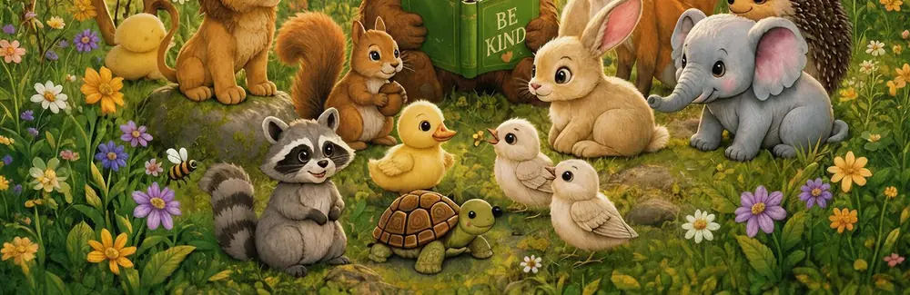

Character education activities for young learners

Character education works best when it is small, repeated and tied to real classroom moments. A poster on the wall will not change behaviour on its own. A two-minute discussion after a story, a shared job or a disagreement will. The activities below are built for young learners: short, talk-first, and easy to run without special materials.
1. One virtue, one week
Choose a single virtue for the week — kindness, respect, patience or responsibility — and name it every morning. Children look for it in stories, in each other and in themselves. On Friday, ask the class to share one moment when they saw it. The virtue becomes a lens, not a lecture.
2. Story, feeling, choice
Read a short story, then follow three steps. First, name the feeling: how did the character feel? Second, name the choice: what did they do? Third, practise the choice: what could we do in a similar moment at school? This keeps discussions focused and gives quieter children a simple way in.
3. Kindness jobs
Rotate small classroom jobs that are really kindness jobs: welcoming a new child, tidying a shared space, helping a classmate who is stuck. When responsibility is visible and shared, children learn that character is something you do, not something you are told to have.
4. Repair, don't just punish
When something goes wrong, add one repair step to the usual response: apologise properly, fix what can be fixed, and say what will happen next time. Forgiveness and responsibility become practical skills this way, practised in real moments rather than only read about.
A simple weekly rhythm
- Monday: introduce the virtue with a story and one question.
- Wednesday: spot the virtue in the classroom and name it out loud.
- Friday: share one example and celebrate the effort, not just the outcome.
Read the book behind these ideas
Little Values, Big Impact gives each virtue its own moment, so children can learn one idea at a time and come back to their favourites.